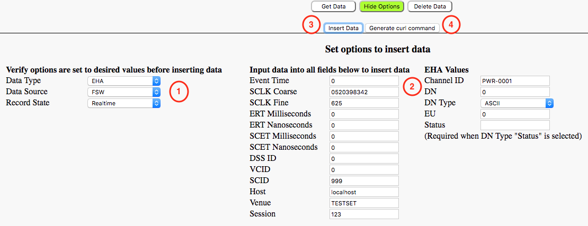
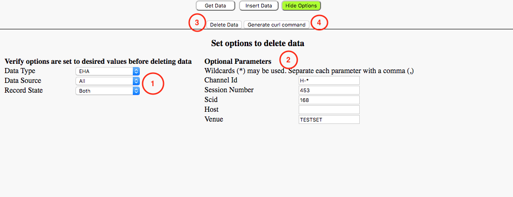

Displays how data is stored in the GLAD down to the channel or event type.
If a channel list is too long, then the channels are further subdivided into categories for easier browsing.
Tree Information
Provides statistical information about the tree level selected above.
The number of inserts listed for a level may not match the amount of data currently present in the GLAD due to configured memory constraints.
Data Operation Selection
Displays the query and results panels for the labeled operation type.
Only a single operation can be viewed at once. Selecting the currently viewed operation type will hide all operations
Get Data - Directly view data, generate a cURL command for retrieving data through a command-line prompt, or directly download data.
Insert Data - Directly insert a single data entry or generate a cURL command for inserting a single datra entry.
Delete Data - Directly delete all data matching supplied parameters or generate a cURL command for deleting data.
Operation Parameters Table
Content of this section is dependent upon the operation being performed
Results section
Contents displayed in this section are dependent upon the operation being performed and its results
Get Data
Get Data Options
Data Type
Select the type of data that should be queried from GLAD
Data Source
Select the source of the desired data
Recorded State
Select whether or not the data desired is recorded or realtime
Time Type
Select the time type associated with the data
Optional Parameters
Channel Id: Filter by a particular Channel Id
Session Number: Filter by a session
Host: Specify the host of the process that generated the data
Venue: Filter results by FSW venue
Dss Id: Filter by Dss Id (station)
Vcid: Filter by the Virtual Channel Id
Scid: Filter by a spacecraft id
Max Results: The max number of results
Lower Bound Time: Return data with time value greater than the lower bound
Upper Bound Time: Return data with time value less than the upper bound
Verified: True if GlobaLAD should return only verified data. False if GlobalLAD should return both verified and unverified Data. The data is verified if GlobalLAD can return everything that has ever existed in that time range. If the last data point was trimmed due to the data depth and was removed after the specified lower bound time, the data is considered unverified because there is a possibility data points are missing from the query
Binary Response: Downloads the data as a binary file
Output Format: Select the output format when downloading the data
Show Column Headers: Select if the column headers should be displayed when download the data
View Data
After specifying all desired query parameters clicking the 'View Data' button will display the returned data on the web page
Generate Curl Command
The 'Generic curl command' button can be used to see the curl command based on current configuration parameters
Download Data
After specifying the desired query parameters clicking the 'Download Data'
button will download the results of the query as a JSON file
Insert Data

Insert Data Options
Data Options
Data Type: The type of telemetry being inserted
Data Source: The inserted data's source
Record State: Indicates if the record is realtime or recorded telemetry
Data Field Parameters
The fields in the left column are all required for an insertion to be successful. Enter a value for each entry
These values are not all required and depend on the Data Type being inserted
Insert Data
Click the 'Insert Data' button when ready to insert telemetry
Generate Curl Command
Click the 'Generate curl command' if you wish to view the curl command for the options that are set
A successful insertion will show the message
Delete Data

Delete Data Options
Data Options
Data Type: The type of telemetry being deleted
Data Source: The source of the data to be deleted
Record State: Indicates if the record is realtime or recorded telemetry
Optional Parameters
Id: The ID of the telemetry being deleted
Session Number: The session number to remove the data from
Scid: The spacecraft id
Host: The host where the data exists
Venue: The venue to remove the data from
Delete Data
Click the 'Delete Data' button when ready to delete data
Generate Curl Command
Click the 'Generate curl command' if you wish to view the curl command for the options that are set
A successful deletion will show the message
Settings Help
Global LAD Settings
Depth
The Depth table refers to how many entries of a telemetry type are kept in the Global LAD
This table contains the current depth setting for each telemetry type. To modify a particular type select the drop-down menu on the left and enter a new depth value in the right box.
Click the 'update' button and select 'ok' on the pop-up dialog shown
Verify the value is updated in the table
LAD Data Options
Download LAD Data Image: This will create and download a current image of the data inside Global LAD
Upload LAD Data Image: This will upload a saved image of the Global LAD and replace the current content with the uploaded image
Wipe LAD Data: This will wipe out ALL data currently in the Global LAD
Disconnect Clients: This will disconnect all clients from the Global LAD
Information Help
Global LAD Information
Here you will see information about the current state of the Global LAD socket server
Open Clients: See information about clients currently connected to the Global LAD socket server
Closed Clients: See information about clients that have disconnected from the Global LAD socket server